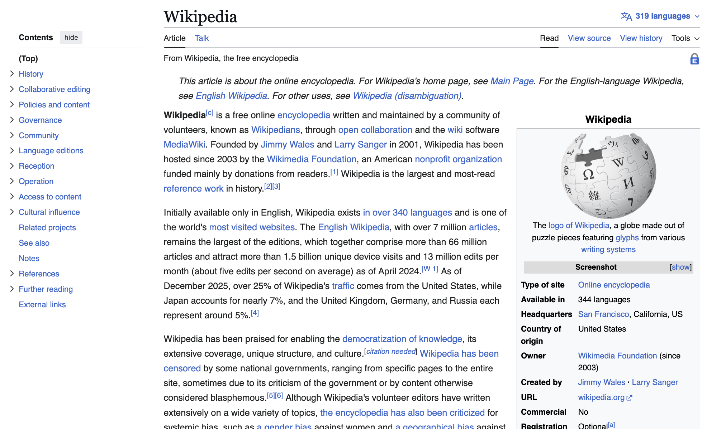
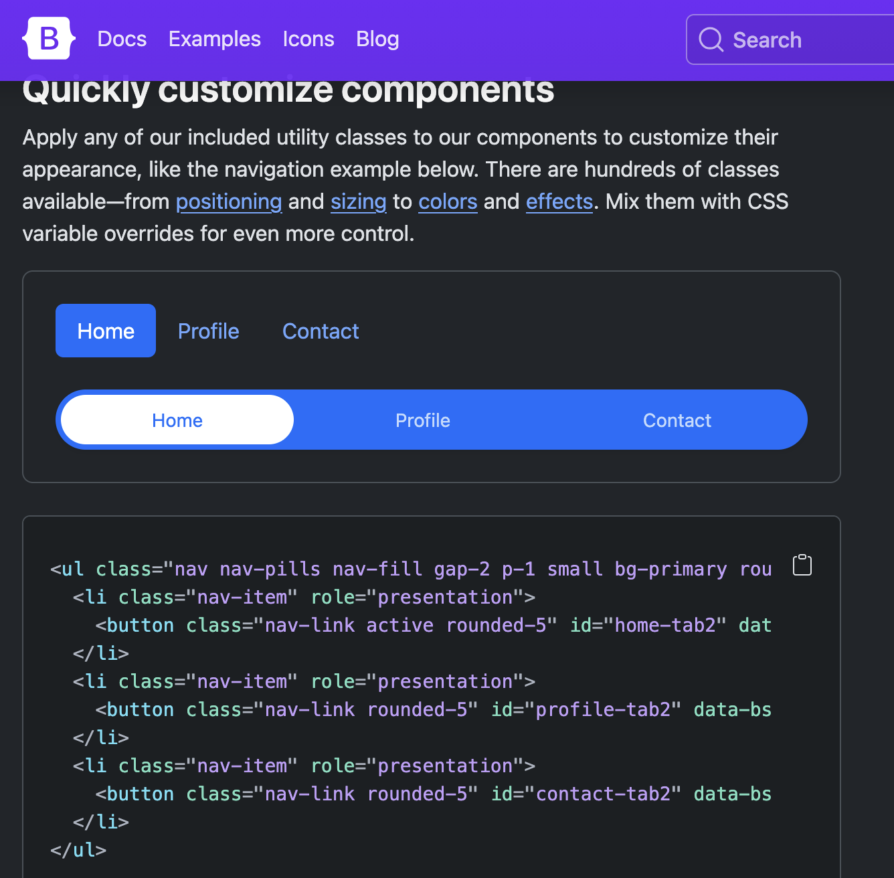

About This Website
Finally enjoying web development?
Despite being a software engineer, I had never enjoyed web development. I'd made a couple iterations of my personal website before, mostly using frameworks or templates, but it always felt like more of a chore than a fun coding project, that I vaguely maintained for interviewers to take a look at. I'd keep a distant eye on the state of the Javascript framework wars, telling myself once things settle down, I'll bite the bullet and learn whichever came out on top. But when the time came, turns out that knowing that React was here to stay didn't make using it any more fun to use. This wasn't helped by the fact that every new web design trend felt like it made the general experience of using the internet worse: less navigable, harder to search, one long page full of animations and devoid of any useful information. How far we've strayed from peak web-design

However, a couple things happened: first, writing a C++ web-server at my previous job renewed my interest in the technical aspects of the web. Most importantly though, spending too much time scrolling hacker news showed me a world of simple HTML websites: people writing blogs, showing off small coding projects, on simple, elegant websites that, for once, didn't feel hostile to use. "Inspect Element" no longer yielded tons of obfuscated class names, but nice semantic html like I'd learned in middle school. As I felt the need to have an online presence for my bands, I thought: "why not make a simple website that I can fully understand"? No frameworks, no templates, no build step, just html, basic css, and the minimum amount of javascript required to get what I wanted.
Now you might look at the code, and think: "but Sebastian, this is clearly AI-generated", and yep, it's pretty obvious: I'm using LLMs pretty heavily for this project (I'll never have you read any AI-generated text though: if I can't be bothered to write it, it's really not worth anybody's time). The truth is I still don't really want to deal with CSS, and the frameworks that are here to "simplify" it look worse (at least to the untrained eye) than the problem they are trying to solve.

<ul class="nav nav-pills nav-fill gap-2 p-1 small bg-primary
rounded-5 shadow-sm" id="pillNav2" role="tablist"
style="--bs-nav-link-color: var(--bs-white);
--bs-nav-pills-link-active-color: var(--bs-primary);
--bs-nav-pills-link-active-bg: var(--bs-white);">
But I was also curious: a friend at Thanksgiving told me that google had just released Antigravity, an LLM-assisted code editor, for free. I'd never properly used LLMs for a project (it was hopelessly useless on my work codebase back then), and I wondered if this could be a good way to learn a new skill: give it a task, inspect the implementation plan, ask about everything I don't understand, only keep what I can fully grasp. And so far, it feels like it's been going pretty well! I do spent a lot of time asking it to simplify, remove dependencies and animations, refactor, etc... But in the process of doing that, I feel like my understanding of webdev is growing, and I have a much better grasp of everything actually going on in this website that when I used frameworks like Next.js, which hide all the magic. It's all simple enough that I handwrite the content in html, and even tweak my arch-nemesis css by hand, inspired by another titan of web design.
Granted, if I wanted to scale this site up, I'm sure these frameworks would solve a lot of problems for me, but I'd rather encounter the problems first hand before I reach for a magical solution.
This is why some of the website uses some, mmm.... unusual approaches. Why use a small database when I can just read a public csv hosted in google docs? Maybe I'll learn why at some point, but so far so good.
And in the end it happened: making this website is fun! I think about things I could add to it (like this blog) and then actually add them, without cursing at the W3C the whole time. Now to see if it'll help my band get more gigs...